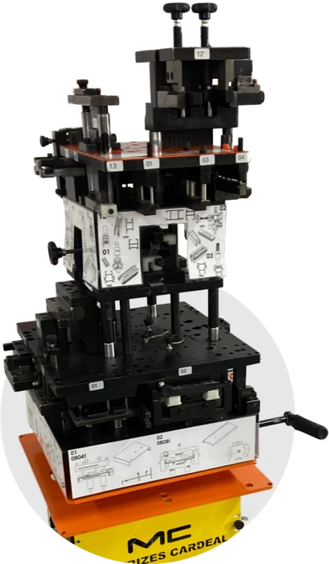
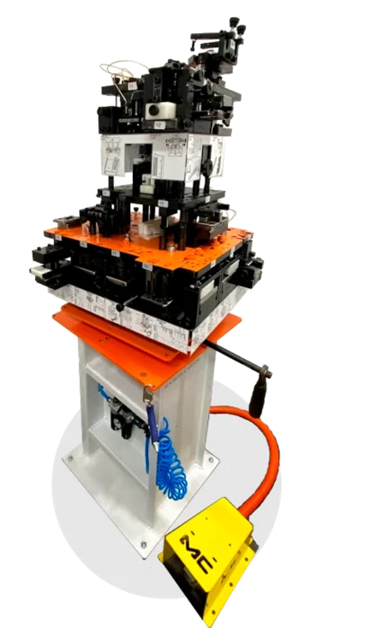
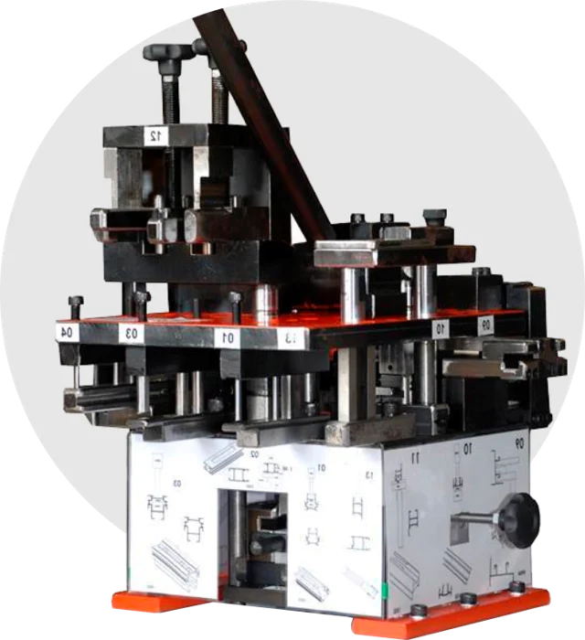

Estampos Matrizes Cardeal fazem várias operações em um único equipamento: correr, giro, maxim-ar, veneziana, pingadeira e mais. Mais produção e mais qualidade em cada peça, com atendimento da FC em todo o Mato Grosso.



Conte quais perfis e tipologias você fabrica. A FC indica o modelo certo e envia a cotação.